We return again to the spectra computed on Page  ,
corresponding to waveshaping functions of the form 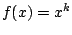. We note
with pleasure that not only are they all in phase (so that they can
be superposed with easily predictable results) but also that the spectra
spread out as
,
corresponding to waveshaping functions of the form 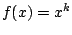. We note
with pleasure that not only are they all in phase (so that they can
be superposed with easily predictable results) but also that the spectra
spread out as  increases. Also, in a series
of the form,
increases. Also, in a series
of the form,
Now suppose we wish to arrange for different terms in the above expansion
to dominate the result in a predictable way as a function of the index  .
To choose the simplest possible example, suppose we wish to be the largest
term for 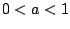, then for it to be overtaken by the more quickly growing
term for 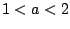, which is then overtaken by the
.
To choose the simplest possible example, suppose we wish to be the largest
term for 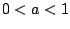, then for it to be overtaken by the more quickly growing
term for 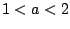, which is then overtaken by the  term for
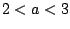 and so on, so that each
term for
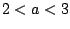 and so on, so that each  th term takes over at index
th term takes over at index  .
To make this happen we just require that
.
To make this happen we just require that
Before plugging in 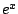 as a transfer function it's wise to plan how we
will deal with signal amplitude, since grows quickly as
 increases. If we're going to plug in a sinusoid of amplitude
increases. If we're going to plug in a sinusoid of amplitude  , the maximum output
will be 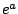, occurring whenever the phase is zero. A simple and natural
choice is simply to divide by to reduce the peak to one, giving:
, the maximum output
will be 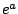, occurring whenever the phase is zero. A simple and natural
choice is simply to divide by to reduce the peak to one, giving:
| 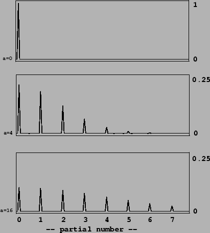 |